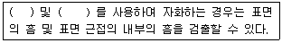

자기비파괴검사기사 (2015-03-08 기출문제)
1과목: 비파괴검사 개론
1. 기체에 방사선이 닿으면 전기적으로 중성이었던 기체의 원자 또는 분자가 이온으로 분리되는 작용은?
- 형광작용
- 사진작용
- 전리작용
- 기상작용
(정답률: 92%)

2. 다음 중의 와전류탐상검사로 검사가 곤란한 것은?
- 페인트의 두께 측정
- 도금의 두께 측정
- 배관 용접부 내부의 기공
- 탄소강과 스테인리스강과의 재질 구별
(정답률: 72%)
3. 비파괴검사의 역할에 대한 설명으로 틀린 것은?
- 제조공정을 합리화할 수 있다.
- 제조원가의 절감이 가능하다.
- 재료의 손실을 줄일 수 있다.
- 결함이 존재하는 재료를 항상 폐기할 수 있다.
(정답률: 77%)
4. 중성자투과시험(NRT)에서 중성자 선원의 선택시 고려할 사항에 해당하지 않는 것은?
- 중성자 에너지
- 중성자 강도
- 가속기의 종류
- 선원의 크기와 운반성
(정답률: 60%)
5. 다음 중 방사선투과검사로 검출하기 어려운 결함은?
- 용입부족
- 언더컷
- 기공
- 라미네이션
(정답률: 73%)
6. 금속초미립자의 특성으로 옳은 것은?
- 금속초미립자의 융점은 금속덩어리보다 낮다.
- 저온에서 열저항이 매우 커서 열의 부도체이다.
- 활성이 약하여 화학반응은 일으키지 않는다.
- Fe계 합금 초미립자는 금속덩어리보다 자성이 약하다.
(정답률: 50%)
7. Cu - Ni 합금이 아닌 것은?
- 알루멜(Alumel)
- 백동(White copper)
- 콘스탄탄(Constantan)
- 모넬메탈(Monel metal)
(정답률: 60%)
8. 강을 열처리할 때 탄소와 반응하여 탄화물을 생성하지 않는 원소는?
- W
- Mo
- Ni
- Cr
(정답률: 31%)
9. 탄소강의 마텐자이트변태에 대한 설명 중 옳은 것은?
- 확산을 수반하는 변태이다.
- 과포화 고용체이다.
- 결정구조는 면심입방결정구조이다.
- 0.6%탄소 이하에서 판상(플레이트) 형태의 마텐자이트가 나타난다.
(정답률: 37%)
10. 강 속의 망간(Mn) 합금량이 충분하지 못한 경우 1100 ~ 1200℃의 고온가공을 받을 때 균열이 발행하는 적열취성(red shortness)의 원인이 되는 원소는?
- S
- P
- Si
- Cu
(정답률: 74%)
11. 구상흑연주철 제조에 첨가되는 흑영구상화제가 아닌 것은?
- Sn계 합금
- Mg계 합금
- Si계 합금
- Ca계 합금
(정답률: 50%)
12. 텅스텐계 고속도 공구강에 대한 설명으로 옳은 것은?
- 조성은 18%W-4%Mo-1%V이다.
- 고온에서 결정립 조대화에 기여한다.
- 텅스텐은 마텐자이트에 고용되어 뜨임저항을 감소시킨다.
- W은 일부의 C와 결합하여 W6C를 형성하여 내마모성을 높인다.
(정답률: 60%)
13. 합금의 조직 미세화 처리 목적으로 용융금속에 금속나트륨을 첨가한 합금계는?
- Cu - Zn 계
- Cu - Ni 계
- Al - Si 계
- Zn - Al - Cu 계
(정답률: 53%)
14. 단면수축율이 10%이고 원단면적이 20m2 인 시편을 최대하중 2000kgf 로 인장하였을 때, 파단직전의 단면적은?
- 14m2
- 15m2
- 17m2
- 18m2
(정답률: 60%)
15. Fe-C 평형 상태도에서 존재하지 않는 불변 반응은?
- 공정반응
- 공석반응
- 포정반응
- 포석반응
(정답률: 72%)
16. 정격 2차 전류가 300A, 정격 사용율이 40%인 아크 용접기에서 200A로 용접시의 허용사용율(%)은?
- 40
- 60
- 90
- 100
(정답률: 55%)
17. 용접부에 생기는 결함 중 구조상의 결함이 아닌 것은?
- 변형
- 표면 결함
- 기공
- 슬래그 섞임
(정답률: 62%)
18. 강의 용착 금속 결함 중 은점(Fish eye) 발생의 가장 큰 원인이 되는 가스로 가장 적합한 것은?
- O2
- N2
- CO2
- H2
(정답률: 60%)
19. 직류 아크 용접기의 극성에서 정극성과 비교한 역극성의 설명으로 올바른 것은?
- 용접봉을 음극에 연결한다.
- 모재의 용입이 깊다.
- 용접봉의 용융속도가 빠르다.
- 비드의 폭이 좁다.
(정답률: 52%)
20. 다음 중 금속원자가 상온에서 원자간의 인력에 의해 접합할 수 있는 거리로 옳은 것은?
- 10-7
- 10-8
- 10-9
- 10-10
(정답률: 72%)
2과목: 자기탐상검사 원리
21. 자분탐상시험에서 원형자화를 간접 유도하여 자화하는 방법은?
- 극간법
- 축통전법
- 전류관통법
- 프로드법
(정답률: 64%)
22. 프로드법으로 자분탐상시험할 때 자화전류의 개회로 전압이 30V 이었다. 시험체에 동(copper)의 용착을 방지하기 위한 조치로 옳은 것은?
- 얇은 합판재를 프로드 선단에 부착한다.
- 강을 프로드 선단에 부착하여 시험한다.
- 반도체를 프로드 선단에 부착하여 시험한다.
- 플라스틱을 프로드 선단에 부착하여 시험한다.
(정답률: 60%)
23. 다음 중 자분검사액의 고체 성분의 농도를 측정하는 방법으로 가장 적절한 것은?
- 부유액의 무게를 측정한다.
- 벤졸에 고체 성분을 담근다.
- 부유액이 침전하도록 놓아둔다.
- 자석에서의 인력을 측정한다.
(정답률: 58%)
24. 단상반파정류, 단상전파정류와 같은 자화전류를 총칭하여 무엇이라 하는가?
- 직류
- 교류
- 맥류
- 충격전류
(정답률: 60%)
25. 실린더형 자성체 내부 중심에 중심도체를 놓고 직류 전류를 흘릴 때 자계의 세기가 가장 높은 곳은?
- 중심도체 내부중심
- 중심도체 외부표면
- 실린더의 내부표면
- 실린더의 외부표면
(정답률: 63%)
26. 누설자속탐상법(MFL)의 특징이 아닌 것은?
- 자분을 사용하지 않는다.
- 결함의 깊이를 알 수 있다.
- 복잡한 형상에는 적용이 곤란하다.
- 신호 해석을 위한 검사원의 기량이 필요하다.
(정답률: 31%)
27. 반경 2m의 원형으로 한번 감은 도선에 10A의 전류가 흐르면 원형전류의 중심에서 자계의 세기는?
- 2.5H
- 5.0H
- 10H
- 20H
(정답률: 36%)
28. 다음 중 비교적 작은 자계에서 자기포화가 되는 재료는 어떤 것인가?
- 고탄소강 또는 보자력이 큰 것
- 저탄소강 또는 투자율이 큰 것
- 고장력강 또는 잔류자기가 큰 것
- 스테인리스강 또는 담금질한 것
(정답률: 80%)
29. 용접 후 열처리 등이 필요할 때 용접부를 자분탐상시험 하여 합격여부 판정을 위한 일반적인 시험시기로 가장 적합한 것은?
- 최종 열처리 후
- 용접완료 후 즉시
- 용접완료 12시간 경과 후
- 용접완료 24시간 경과 후
(정답률: 81%)
30. 프로드를 이용한 자기 탐상시험에서 프로드 접촉부 아래에 있는 결함은 어떻게 검출하는가?
- 여러 부분을 나누고 각 부분을 겹쳐서 시험한다.
- 전류값을 낮추어 시험한다.
- 자화력을 증가시킨다.
- 자속밀도를 증가시킨다.
(정답률: 67%)
31. 다음 중 1년 이상 사용하지 않은 극간법 장비들의 인상력(Lifting power)을 측정한 결과, 수리 또는 보수 전에는 사용하기 곤란한 것은? (단, 최대 극간거리에서 측정하였다.)
- 교류 장비로 인상력이 5kg 인 장비
- 교류 장비로 인상력이 8kg 인 장비
- 직류 장비로 인상력이 15kg 인 장비
- 영구자석 장비로 인상력이 20kg 인 장비
(정답률: 77%)
32. 건식 자분탐상시험법의 장점이 아닌 것은?
- 휴대용 장비 사용시 검사비용이 비교적 저렴하다.
- 교류나 반파정류를 사용시 유동성이 좋다.
- 휴대용 장비로 대형부품의 검사가 용이하다.
- 미세한 결함에 대하여 습식법과 마찬가지로 감도가 아주 좋다.
(정답률: 71%)
33. 자분탐상시험시 직류(DC)로 검사하여 지시를 찾아내었을때, 이 지시가 표면의 불연속인지 또는 표면하의 불연속인지를 판명하기 위한 방법으로 가장 타당한 것은?
- 충격법으로 재검사한다.
- 탈자시키고 자분을 다시 적용한다.
- 높은 전류치로 재검사한다.
- 교류(AC)로 재검사한다.
(정답률: 74%)
34. 자분탐상시험을 한 뒤 탈자를 할 경우 탈자전류의 초기 값은 어떻게 정하는 것이 좋은가?
- 검사할 때 사용한 전류값과 같게 하여 탈자를 시작한다.
- 검사할 때 사용한 전류값보다 조금 높게 하여 탈자를 시작한다.
- 검사할 때 사용한 전류값보다 조금 낮게 하여 탈자를 시작한다.
- 자기포화치가 0에서부터 서서히 전류값을 높여 탈자를 시작한다.
(정답률: 77%)
35. 적절한 자화방법과 정확한 탐상결과를 얻기 위해 고려 해야할 내용으로 가장 거리가 먼 것은?
- 시험체의 성질을 고려한다.
- 자속의 방향이 시험면에 가능한 한 평행이 되게 한다.
- 반자계가 생기지 않게 한다.
- 검출하고자 하는 결함에 가능한 한 경사각으로 자속이 흐르게 한다.
(정답률: 64%)
36. 시험 코일에 자속 밀도를 변화시키고자 할 때 가장 적절하게 표현한 것은?
- 코일 길이의 변화로만 가능하다.
- 코일 전류의 변화로만 가능하다.
- 코일 권선수의 변화로만 가능하다.
- 코일 길이, 전류, 권선수 모두 다 가능하다.
(정답률: 75%)
37. 다음 중 교류 성분이 낮은 것부터 강한 순서로 나열된 것은?
- 단상전파정류 → 단상반파정류 → 삼상전파정류 →삼상반파정류
- 단상반파정류 → 삼상반파정류 → 단상전파정류 → 삼상전파정류
- 삼상반파정류 → 단상반파정류 → 삼상전파정류 → 단상전파정류
- 삼상전파정류 → 삼상반파정류 → 단상전파정류 → 단상반파정류
(정답률: 55%)
38. 다음 특성 중 자성체로써 사용할 수 없는 것은?
- 투자율이 높은 것
- 자기 이력곡선이 없는 것
- 자기 이력곡선의 명확한 포화점이 있는 것
- 잔류자기가 있는 것
(정답률: 87%)
39. 코일법으로 검사할 때, 반자계의 영향을 적게 하는 방법을 설명한 것이다. 옳은 것은?
- 짧은 코일을 사용하여 여러 번 자화한다.
- 교류보다는 직류를 사용, 표층부만 자화되게 하여 “시험체의 길이/지름”의 지름값이 작아지게 하고 자화 한다.
- 시험체의 양쪽 끝에 시험체와 지름이 같거나 보다 굵은 시험체를 연결하고 자화한다.
- “시험체의 길이/지름” 의 값을 작게 하므로써 긴 시험체의 양끝 부분에 자극이 적게 생기게 하여 가능한 한 짧은 코일을 사용한다.
(정답률: 56%)
40. 자분탐상시험시 투자율이 다른 재질경계에서 나타나는 지시에 대한 확인검사는 자분탐상시험만으로는 판별이 용이하지 않다. 이러한 의사지시모양의 판별 방법으로 적당치 않은 것은?
- 표면연마 후 부식시켜 거시적 조직검사
- 표면연마 후 부식시켜 미시적 조직검사.
- 탈자 후 재검사하여 재현성 확인
- 침투탐상 등 다른 시험방법으로 확인검사.
(정답률: 48%)
3과목: 자기탐상검사 시험
41. 자분탐상검사와 관련된 다음 설명 중 옳은 것은?
- 자외선 조사등의 파장은 약 265nm 이다.
- 자계의 세기를 나타내는 전류계는 파고치로 표시된다.
- 영구자석은 영구적으로 자속이 변화하지 않으므로 별도의 관리가 필요하지 않다.
- 교류자화는 표면결함의 검출은 곤란하며 표면하의 결함은 잘 검출된다.
(정답률: 61%)
42. 다음 중 평판용접부의 후열처리 후 자분탐상검사를 실시 하고자 할 때 어떤 자분탐상검사법이 가장 적절한가?
- 습식 극간법
- 습식 코일법
- 건식 통전법
- 건식 다축자화법
(정답률: 68%)
43. 형광 습식자분탐상 검사액의 성능점검항목으로 가장 거리가 먼 것은?
- 불순물의 혼입량
- 검사액 중의 자분 분산농도
- 색채, 형광휘도
- 1000Lx 이상의 가시광 조도
(정답률: 79%)
44. 다음 중 기기의 운전 중에 발행하며 보수검사에서의 검출 대상이 되는 결함은?
- 스트링거
- 열처리 균열
- 라미네이션
- 피로균열
(정답률: 74%)
45. 내경 r, 외경 R, 두께 d 인 파이프 형태의 도체에 전류를 흘렸을 때 자계가 최대가 되는 곳은?
- 중심 부분
- 중심에서 r 되는 곳
- r 과 R 의 중간되는 곳
- 중심에서 R 되는 도체의 표면
(정답률: 72%)
46. 강자성체를 교류자화시 일정한 강도의 자계를 주어도 자속밀도가 일정하게 되지 않으며, 표면에서 최대이고, 표면으로부터 안으로 들어감에 따라 현저히 저하하는 현상을 교류자속의 무엇이라 하는가?
- 도플러효과(Doppler effect)
- 적산효과(Superimpose effect)
- 표피효과(Skin effect)
- 홀효과(Hall effect)
(정답률: 81%)
47. 다음 중 자분탐상검사에서 자화방법의 선택시 고려하여야 할 설명으로 가장 거리가 먼 것은?
- 가능한 한 반자계가 생기지 않도록 한다.
- 자계 또는 자속의 방향이 가능한 한 시험면에 수직이 되도록 한다.
- 검출하고자하는 결함에 가능한 한 직각으로 교차라는 방향으로 자속이 흐리게 한다.
- 대형 시험체는 시험면을 분할하여 국부적으로 자화시킬수 있는 자화방법을 선택하도록 한다.
(정답률: 50%)
48. 잔류자계를 제거할 수 있는 방법이 아닌 것은?
- 제품을 코일로부터 서서히 멀리한다.
- 코일을 제품으로부터 서서히 멀리한다.
- 자화전류을 단계적으로 감소시킨다.
- 제품을 큐리점 이하로 열처리한다.
(정답률: 84%)
49. 극간법으로 강용접부를 자분탐상검사하는 경우의 설명으로 옳은 것은?
- 탐상유효범위는 예상되는 결함의 방향에 대하여 자계의 방향과 수평이 되게 한다.
- 휴대형 극간식 탐상기는 통사의 접촉상태에서 자극 주위의 2~3mm 가 불감대역이다.
- 자화 전류치는 자극 1인치당 70~100A 의 범위이다.
- 자계의 강도는 전류치와 자극간격에 따라 자유롭게 변한다.
(정답률: 50%)
50. 시험체의 총길이가 80cm 인 환봉에서 40cm 는 직경이 10cm 이고, 나머지 40cm 는 직경이 30cm 인 경우, 축통전법으로 통전할 때 가장 효과적인 방법은?
- 직경 30cm 에 적합한 전류값으로 1차 통전시험하고, 직경 10cm 에 적합한 전류값으로 2차 통전시험한다.
- 직경 10cm 에 적합한 전류값으로 1차 통전시험하고, 직경 30cm 에 적합한 전류값으로 2차 통전시험한다.
- 직경 10cm 에 적합한 전류값으로 한번에 통전시험한다.
- 직경 30cm 에 적합한 전류값으로 한번에 통전시험한다.
(정답률: 59%)
51. 건식자분과 프로드법으로 탐상할 때 시험체의 두께가 19mm(3/4인치를 초과하고 프로드 간격이 178mm (7인치)일 때 적정한 자화전류(A) 범위인 것은?
- 100 ~ 150
- 200 ~ 350
- 400 ~ 550
- 600 ~ 800
(정답률: 43%)
52. 용접하기 전에 개선면을 자분탐상 또는 침투탐상검사를 하는 주된 이유는?
- 개선면 연삭시에 발생한 결함을 검출하기 위하여
- 용접시 열에 의해 면이 갈라질 우려가 있는 적층(Delamination)을 검출하기 위하여
- 용접성이 어떤지를 확인하기 위하여
- 직류 아크 용접시 잔류 자기를 유도하여 아크 불림을 줄이기 위하여
(정답률: 66%)
53. 건식법과 비교하여 습식 형광 자분탐상이 사용되는 가장 큰 이유로 적합한 것은?
- 시험품의 크기가 매우 클 때 사용한다.
- 용접부를 검사할 때 사용한다.
- 탐상속도를 빨리하고 정밀도가 요구될 때 사용한다.
- 시험을 야외에서 수행할 때 사용한다.
(정답률: 80%)
54. 자분탐상 시험결과 시험품에 여러 가지 불연속들을 관찰 하였다면 제일 먼저 조치해야 할 내용은?
- 시험품을 폐기한다.
- 불연속들을 제거한 후 시험품을 사용한다.
- 불연속을 적용 허용기준 요건에 의해 판정한다.
- 균열의 깊이를 확인하기 위하여 다른 비파괴검사를 한다.
(정답률: 82%)
55. 다음 중 자분탐상시험시 건식법에 사용되는 자분의 형상으로 가장 이상적인 것은?
- 길고 가는 형태
- 구형 형태
- 평평한 형태
- 가 및 나의 혼합 형태
(정답률: 50%)
56. 자분탐상검사에 영향을 미치는 자분의 성질로 틀린 것은?
- 투자율이 높고, 보자력이 작은 자분이 요구된다.
- 자분입도의 선택은 자분탐상시험의 여러 조건을 고려하여야 한다.
- 비중이 낮은 자분이 결함부로의 흡착성이 좋다.
- 자분의 자기적 성질은 자분의 분산성과 흡착성에 영향을 준다.
(정답률: 59%)
57. 습식형광자분의 농도 범위로 가장 적당한 것은?
- 0.3 ~ 1.5g/L
- 7 ~ 15g/L
- 16 ~ 30g/L
- 35 ~ 50g/L
(정답률: 79%)
58. 어떤 도체에 솔레노이드가 1m 당 4회 감겨 있고 200A 의 전류가 흐른다면 자계의 세기는 몇 A/m 인가?
- 25
- 250
- 400
- 800
(정답률: 50%)
59. 프로드법에서 높은 자속밀도가 전극부위에 방사상으로 형성되는 자분모양을 무엇이라고 하는가?
- 전극지시
- 재질경계지시
- 단면급변지시
- 단류선에 의한 지시
(정답률: 79%)
60. 비접촉법에 의하여 자분탐상시험을 할 대 자화에 이용 되지 않는 것은?
- 프로드 전극
- 코일
- 전류 관통봉
- 자속 관통봉
(정답률: 74%)
4과목: 자기탐상검사 규격
61. 철강 재료의 자분탐상 시험방법 및 자분모양의 분류(KS D 0213)에서 자화전류의 선택에 대한 [보기]의 설명 중 ( )안에 알맞은 용어는?

- 교류, 맥류
- 직류, 맥류
- 직류, 충격전류
- 교류, 충격전류
(정답률: 66%)
62. 철강 재료의 자분탐상 시험방법 및 자분모양의 분류(KS D 0213)에 규정된 대비시험편은?
- A1형 시험편
- C형 시험편
- A2형 시험편
- B형 시험편
(정답률: 63%)
63. 철강 재료의 자분탐상 시험방법 및 자분모양의 분류(KS D 0213)에서 C형 표준시험편을 작은 조각으로 분리하였을 때의 크기로 옳은 것은?
- 5×10mm
- 5×15mm
- 5×20mm
- 5×25mm
(정답률: 58%)
64. 철강 재료의 자분탐상 시험방법 및 자분모양의 분류(KS D 0213)에서 큰 전류가 흐르는 자화 케이블등이 시험면에 접촉하면 그 부위가 국부적으로 자화되기 때문에 생기는 굵고 흐린 자분모양을 무엇이라 하는가?
- 전류지시
- 단면급변지시
- 자극지시
- 오염지시
(정답률: 70%)
65. 철강 재료의 자분탐상 시험방법 및 자분모양의 분류(KS D 0213)에서 코일법일 경우가 파고치에 부기하여야 할 내용은?
- 프로드간격
- 정류방식
- 코일의 치수, 권수
- 사용된 대비시험편
(정답률: 78%)
66. 보일러 및 압력용기에 대한 자분탐상검사 (ASME Sec.V, Art.7)에 따라 교류를 이용하는 극간법의 경우 최대 극간거리에서 최소 몇 파운드의 인상력을 가져야 하는가?
- 5
- 10
- 18
- 40
(정답률: 60%)
67. 철강 재료의 자분탐상 시험방법 및 자분모양의 분류(KS D 0213)에서 규정하고 있는 의사모양이 아닌 것은?
- 전류지시
- 단면급변지시
- 오염지시
- 표면거칠기지시
(정답률: 63%)
68. 철강 재료의 자분탐상 시험방법 및 자분모양의 분류(KS D 0213)에서 규정한 자분의 농도로 옳게 짝지어진 것은?
- 비형광습식 : 1 ~ 5g/L, 형광습식: 0.1 ~ 1g/L
- 비형광습식 : 2 ~ 10g/L, 형광습식: 0.2 ~ 2g/L
- 비형광습식 : 1 ~ 5g/L, 형광습식: 0.2 ~ 2g/L
- 비형광습식 : 2 ~ 10g/L, 형광습식: 0.1 ~ 1g/L
(정답률: 77%)
69. 보일러 및 압력용기에 대한 표준자분탐상검사(ASME Sec.V, Art.25 SE-709)에서 용접부의 오목한 부분이나 시험체의 표면상태, 스케일 등에 의해서 나타난 자분모양은?
- 불연속(discontinuities)
- 의사지시(false indications)
- 관련지시(relevant indications)
- 무관련지시(nonrelevant indications)
(정답률: 45%)
70. 철강 재료의 자분탐상 시험방법 및 자분모양의 분류(KS D 0213)에서 가느다란 요철부에 생기는 누설 자속에 따라 형성되는 자분모양과 자분이 오목부에 고여 생기는 의사모양을 무엇이라 하는가?
- 재질경계지시
- 표면거칠기지시
- 자극지시
- 단면급변지시
(정답률: 49%)
71. 보일러 및 압력용기에 대한 표준자분탐상검사(ASME Sec.V, Art.25 SE-709)에 따른 자분탐상시험에서 형광자분을 사용할 때 자분모양의 정확한 판단을 위해 검사원은 어두운 시험장소의 자외선등 아래에서 최소한 몇 분 이상의 적응시간을 가져야하는가?
- 1분
- 3분
- 5분
- 7분
(정답률: 47%)
72. 철강 재료의 자분탐상 시험방법 및 자분모양의 분류(KS D 0213)에서 표준시험편에 관한 내용 중 틀린 것은?
- A형 표준시험편의 자분 적용은 연속법으로 한다.
- C형 표준시험편의 자분 적용은 연속법으로 한다.
- B형 대비시험편은 장치, 자분의 성능평가에 이용된다.
- C형 표준시험편은 B형 대비시험편의 적용이 곤란한 경우 사용된다.
(정답률: 79%)
73. 철강 재료의 자분탐상 시험방법 및 자분모양이 분류(KS D 0213)에서 자화전류를 통하거나 또는 영구자석을 접촉시켜 주면서 자분의 적용을 완료하는 시험방법을 무엇이라 하는가?
- 습식법
- 연속법
- 잔류법
- 건식법
(정답률: 84%)
74. 철강 재료의 자분탐상 시험방법 및 자분모양의 분류(KS D 0213)에 따른 자기펜 자국(Magnetic writing)의 원인을 옳게 설명한 것은?
- 자화 케이블 등이 시험면에 접촉할 때
- 단면적의 급변으로 생긴 누설자속에 의해
- 잔류법에 있어서 시험품이 서로 접촉한 경우
- 극간법에서 자극의 접촉부에 생기는 누설자속에 의해
(정답률: 57%)
75. 보일러 및 압력용기에 대한 자분탐상검사(ASME Sec.V, Art.7)에서 습식자분의 액조 농도는 침전용량을 측정하여 결정한다. 형광자분의 경우 시료 100mL당 요구되는 침전 용량은?
- 0.1 ~ 0.2 mL
- 0.1 ~ 0.4 mL
- 0.2 ~ 0.4 mL
- 0.2 ~ 0.5 mL
(정답률: 43%)
76. 보일러 및 압력용기에 대한 자분탐상검사(ASME Sec.V, Art.7)에 따라 백색광 및 형광의 측정을 위한 조도계는 수리되었을 때마다 교정을 실시하여야 하며 또한 최소 얼마의 기간마다 교정을 실시하여야 하는가?
- 1개월
- 6개월
- 1년
- 2년
(정답률: 73%)
77. 보일러 및 압력용기에 대한 표준자분탐상검사(ASME Sec.V, Art.25. SE-709)에서 자분 재료에 대한 설명으로 옳은 것은?
- 건식자분은 내열성이 있어 일부 자분은 315℃ 까지의 온도에서 사용할 수 있다.
- 건식자분은 바람이 많이 부는 개방된 장소에서 검사하기 편리하도록 개발된 것이다.
- 습식자분은 일반적으로 입자가 거칠어서 큰 불연속의 검출에 사용하기 위한 것이다.
- 습식자분은 좋은 적심성을 가져야 하나 분산성은 낮아야한다.
(정답률: 70%)
78. 철강 재료의 자분탐상 시험방법 및 자분모양의 분류(KS D 0213)에 따라 교류 및 충전전류를 사용하여 자화하는 경우는?
- 원칙적으로 표면 근방의 내부 결함을 검출할 수 있다.
- 원칙적으로 내부 깊숙한 결함을 검출할 수 있다.
- 원칙적으로 표면결함의 검출에 한한다.
- 원칙적으로 연속법을 사용할 수 있다
(정답률: 65%)
79. 철강 재료의 자분탐상 시험방법 및 자분모양의 분류(KS D 0213)에 대한 자분모양의 설명으로 올바른 것은?
- 독립한 자분모양에서 그 길이가 나비의 2배 이상인 것을 선상의 자분모양이라 한다.
- 독립한 자분모양에서 그 길이가 나비의 2배 이상인 것을 원형상의 자분모양이라 한다.
- 균열로 식별된 자분모양은 선상의 자분모양이라 한다.
- 자분모양이 일정한 면적에 여러 개의 자분모양이 존재 하는 것을 분산한 자분모양이라 한다.
(정답률: 79%)
80. 보일러 및 압력용기에 대한 표준 자분탐상검사(ASME Sec.V, Art.25 SE-709)에서 동막대를 프로드 팁(tip)으로 사용하여 자화하는 경우, 아크 발생으로 시험체 표면에 금속학적인 손상을 유발할 수 있어서 개회로(open circuit)의 전압은 몇 V를 초과하지 않도록 제한하는가?
- 25V
- 50V
- 110V
- 220V
(정답률: 31%)